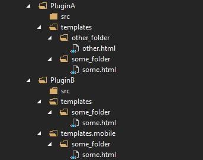

模板引擎
ZKWeb的模板系统使用了DotLiquid。 请先参考DotLiquid的文档: http://dotliquidmarkup.org/
代替Razor的原因
- DotLiquid的模板不要求拥有基类等复杂的环境，只需要传参数即可编译
- DotLiquid的模板只编译成语法树而不是IL代码，每个页面第一次打开的速度远比Razor要快
- 移植性好，目前已经兼容.net core（在ZKWeb的fork中）
模板的例子
<!DOCTYPE html>
<html>
<head>
<title>Hello</title>
{% include_css_here "/static/zkweb.examples.css/hello.css" %}
</head>
<body>
<h1>Hello {{ text | upcase }}!</h1>
{% include_js_here "/static/zkweb.examples.js/hello.js" %}
</body>
</html>

这里的{% %}是标签，|是过滤器，使用{{ }}描画的内容会自动经过Html编码。
{{ }}中可以使用变量或常量，{{ variable }}是变量，{{ "constant" }}是常量。
标签的格式是{% 标签 参数 %}
过滤器的格式是{{ 变量或常量 | 过滤器 | 过滤器: 参数,参数 | 更多过滤器... }}
模板的路径
ZKWeb的模板作为特殊的资源文件管理，同时支持资源文件的重叠+透过式文件系统。
如果还没有看过资源文件的说明，请先查看插件系统。
ZKWeb的模板分为默认模板和设备专用模板，默认模板保存在templates文件夹下，设备专用模板保存在templates.设备名下。
读取模板文件的顺序如下，会返回最先存在的路径。
"App_Data/templates.设备名/路径"
foreach (按加载顺序反序枚举插件) {
"插件目录/templates.设备名/路径"
}
"App_Data/templates/路径"
foreach (按加载顺序反序枚举插件) {
"插件目录/templates/路径"
}
例如Plugins: [ "PluginA", "PluginB" ]，目录结构如下时

在电脑上请求some_folder/some.html时，会返回到PluginB/templates/some_folder/some.html的内容。
在手机上请求some_folder/some.html时，会返回到PluginB/templates.mobile/some_folder/some.html的内容。
在电脑或手机上请求other_folder/other.html时，会返回到PluginA/templates/other_folder/other.html的内容。
如果需要获取指定插件下的模板，可以使用"插件:模板路径"，一般用于模板的继承。
使用以下路径时只会返回PluginA下的文件。
"PluginA:some_folder/some.html"
自带的标签和过滤器
ZKWeb框架中自带了以下的标签
- area
- 描画区域，参考动态内容
- 例:
{% area test_area %}
- fetch
- 把指定路径的执行结果设置到变量
- 例:
{% fetch /api/login_info > login_info %}
- html_lang
- 显示当前的页面语言代号
- 例:
{% html_lang %}
- raw_html
- 描画原始的内容，不经过html编码
- 例:
{% raw_html variable %}
ZKWeb框架中自带了以下的过滤器
- trans
- 翻译指定的文本，参考多语言
- 例:
{{ text | trans }}, {{ "fixed text" | trans }}
- format
- 格式化字符串，最多可支持8个参数
- 例:
{{ "name is [0], age is [1]" | format: name, age }}
- raw_html
- 描画原始的内容，不经过html编码
- 例:
{{ variable | raw_html }}